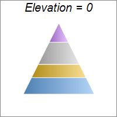
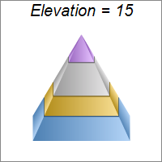
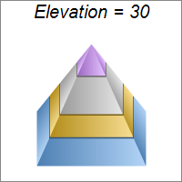
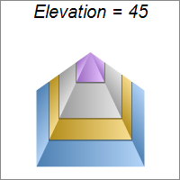
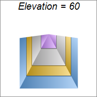
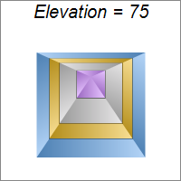
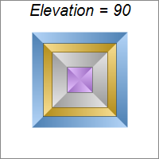

This example demonstrates viewing the pyramid at different elevation angles, configured with PyramidChart.setViewAngle.
ChartDirector 7.1 (C++ Edition)
Pyramid Elevation







Source Code Listing
#include "chartdir.h"
#include <stdio.h>
void createChart(int chartIndex, const char *filename)
{
char buffer[1024];
// The data for the pyramid chart
double data[] = {156, 123, 211, 179};
const int data_size = (int)(sizeof(data)/sizeof(*data));
// The colors for the pyramid layers
int colors[] = {0x66aaee, 0xeebb22, 0xcccccc, 0xcc88ff};
const int colors_size = (int)(sizeof(colors)/sizeof(*colors));
// The elevation angle
int angle = chartIndex * 15;
// Create a PyramidChart object of size 200 x 200 pixels, with white (ffffff) background and
// grey (888888) border
PyramidChart* c = new PyramidChart(200, 200, 0xffffff, 0x888888);
// Set the pyramid center at (100, 100), and width x height to 60 x 120 pixels
c->setPyramidSize(100, 100, 60, 120);
// Set the elevation angle
sprintf(buffer, "Elevation = %d", angle);
c->addTitle(buffer, "Arial Italic", 15);
c->setViewAngle(angle);
// Set the pyramid data
c->setData(DoubleArray(data, data_size));
// Set the layer colors to the given colors
c->setColors(Chart::DataColor, IntArray(colors, colors_size));
// Leave 1% gaps between layers
c->setLayerGap(0.01);
// Output the chart
c->makeChart(filename);
//free up resources
delete c;
}
int main(int argc, char *argv[])
{
createChart(0, "pyramidelevation0.png");
createChart(1, "pyramidelevation1.png");
createChart(2, "pyramidelevation2.png");
createChart(3, "pyramidelevation3.png");
createChart(4, "pyramidelevation4.png");
createChart(5, "pyramidelevation5.png");
createChart(6, "pyramidelevation6.png");
return 0;
}